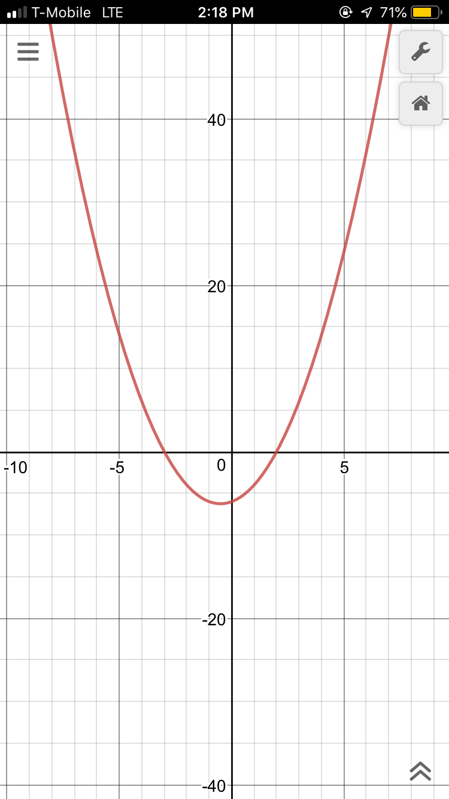

Methods to solve quadratic equations.
Quadratic Formula
The Quadratic formula can solve any quadratic equation.
- First, find the a, b, and c value. They are in the form of
ax2 + bx + c.
- Then, square the b term.
- Multiply the a term by the c term and then the product by 4.
- Subtract your result from part 3 from your result in part 2.
- Take the square root of you previous answer.
- Add your answer to -b, and then also subtract is form -b. These two
answers divided by 2 give you your two roots!.
Completing the Square
- Put the X terms on one side and the constants on the other side.
- Take half of the X term (coefficient), and square it.
- Rewrite the part in step 2 as a perfect square.
- Take the square root of both sides.
- Simplify the radical.
- Isolate the X term.
- Combine like terms.
- Solve for whatever makes it zero. These are your two roots.
Graphing
You can graph the function in a graphing program such as desmos, and see where the graph intersects the x-axis.

Factoring
- Find whatever two numbers that add together to be the coefficient of the x term,
and mulitply to be the constant.
- Rewrite it as (x+whatever term you found in part 1)*(x+the second term you found in part one.)